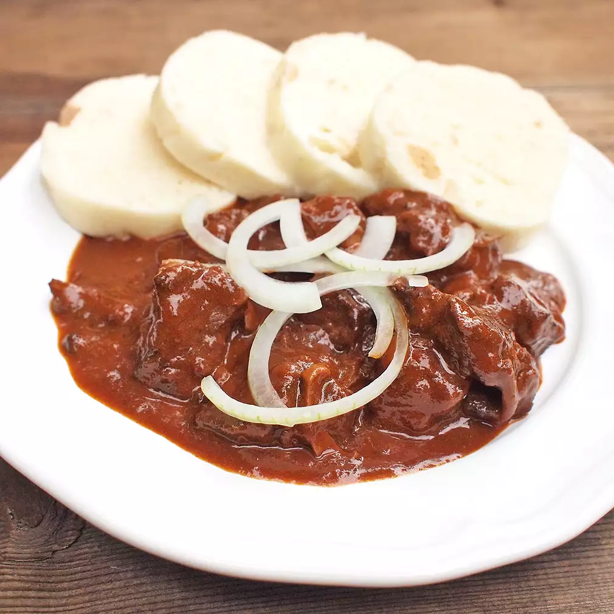

Tradiční hustý guláš z hovězího masa s omáčkou plnou papriky, česneku a koření, podávaný s karlovarským knedlíkem.
Maso nakrájejte na kostky a cibuli nadrobno.
V hrnci rozehřejte sádlo a osmažte cibuli dozlatova. Přidejte maso a restujte.
Přidejte lžíci mouky a papriky, promíchejte a vmíchejte rajčatové pyré.
Podlijte vroucí vodou tak, aby bylo maso téměř ponořené.
Přidejte chilli, prolisovaný česnek, majoránku, kmín, sůl a pepř, dobře promíchejte.
Hrnec přiklopte a duste na mírném plameni asi 2,5 hodiny, dokud maso nezměkne. Podle potřeby dolévejte vodu.
Pokud je potřeba, guláš zahustěte nastrouhanou bramborou a provařte, nebo použijte světlou jíšku (máslo + mouka) a provařte do zhoustnutí.